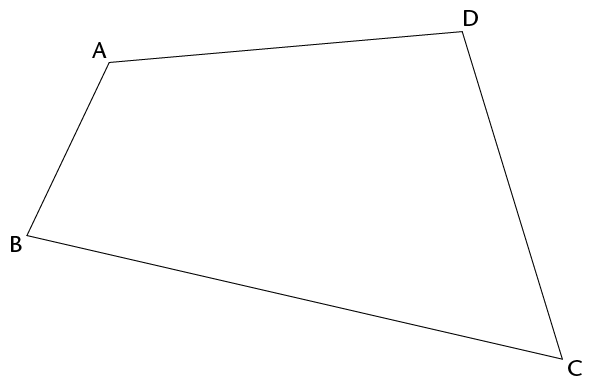
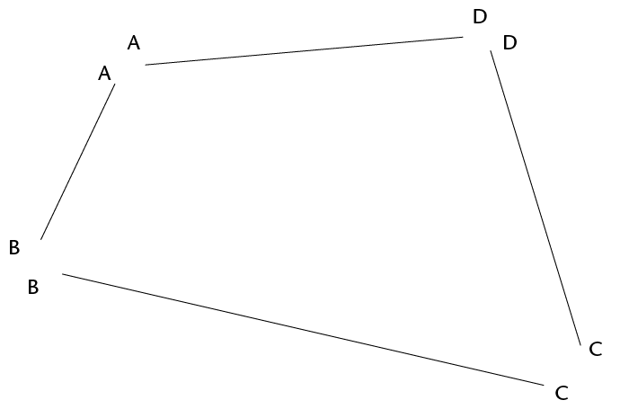
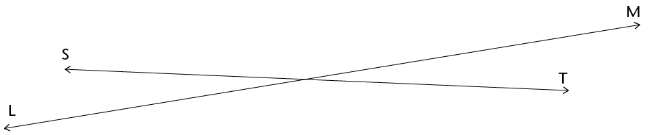
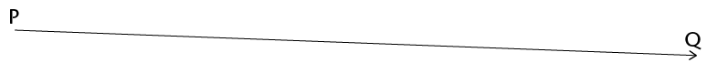
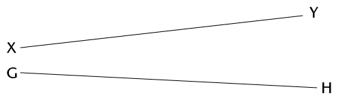
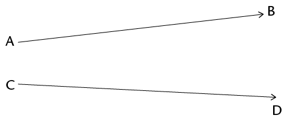
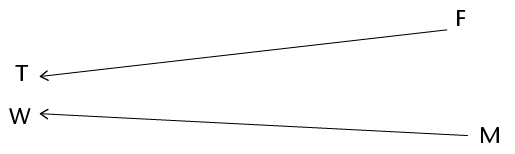
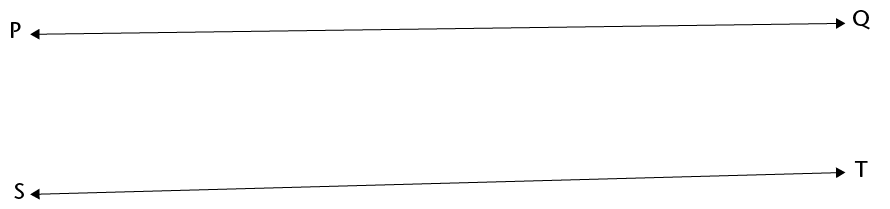
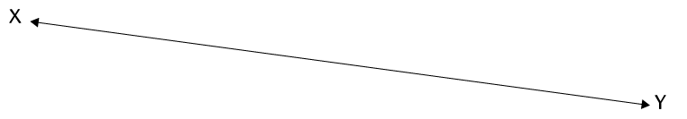

Meetkunde van reguit lyne
Jy weet waarskynlik presies wat met 'n "lyn" bedoel word. In hierdie hoofstuk gaan jy oor lynstukke en halflyne leer en hoe hulle van lyne verskil. Jy gaan ook meer leer oor ewewydige en loodregte lyne en hoe ons hulle in 'n diagram aandui.
Lynstukke, lyne en halflyne
Lynstukke
-
Meet elke sy van hierdie vierhoek. Skryf die afmetings by elke sy neer.

Elke sy van 'n vierhoek is 'n lynstuk.

'n Lynstuk het 'n bepaalde beginpunt en 'n bepaalde eindpunt. Ons kan lynstukke trek en meet.
Trek 'n lynstuk wat 12 cm lank is.
Lyne en halflyne
Ons kan aan lyne dink wat nie 'n begin of einde het nie, alhoewel ons hulle nie volledig kan trek nie. Ons trek dus lynstukke om lyne voor te stel. Wanneer ons 'n lynstuk trek om 'n lyn voor te stel, kan ons pyltjies by albei punte sit om te wys dat die lyn onbepaald by albei punte voortgaan.

Die woord lyn word gebruik om 'n lyn aan te dui wat in albei rigtings voortgaan. Ons kan net 'n deel van 'n lyn sien en trek. 'n Lyn kan nie gemeet word nie.
Trek lyn AB.
Het jy die hele lyn AB getrek? Verduidelik.
Ons kan ook aan 'n lyn dink wat 'n bepaalde beginpunt het maar onbepaald voortgaan by die ander punt. Dit word 'n halflyn of 'n straal genoem.
Ons kan die beginpunt en 'n deel van 'n halflyn trek en 'n pyltjie gebruik om aan te dui dat dit by die een punt aangaan.
Halflyn PQ gaan na regs aan:

Halflyn DC gaan na links aan:

Trek halflyn EF.

Het jy die hele halflyn EF getrek? Verduidelik.
-
Kruis lynstukke XY en GH êrens?
 -
Kruis lyne KL en NP êrens?

-
Kruis halflyne AB en CD êrens?
 -
Kruis halflyne FT en MW êrens?

-
Kruis halflyne JK en RS êrens?

Ewewydige en loodregte lyne
Ewewydige lyne
Twee lyne wat 'n konstante afstand uitmekaar is, word ewewydige lyne genoem. Lyne AG en BH hier onder is ewewydig. Ons skryf AG || BH.

Meet die afstand tussen die twee lyne:
by A en B
-
by C en D
-
by E en F
Hier is nog ewewydige lyne:

Trek twee ewewydige lyne.
Trek drie lyne wat ewewydig aan mekaar is.

Sal ewewydige lyne êrens kruis? Verduidelik.
-
Dink jy lyne PQ en ST is ewewydig? Hoe kan jy kontroleer?

-
Trek twee lyne wat amper ewewydig is, maar nie heeltemal nie.

-
Beskryf wat jy gedoen het om seker te maak dat jou twee lyne nie ewewydig is nie.
-
-
Kan twee lynstukke ewewydig wees?
-
Is lynstukke DK en FS ewewydig?

-
Is lynstukke MN en AB ewewydig?

-
Wat kan jy doen sodat jy beter in staat sal wees om te kontroleer of die twee lynstukke hier bo ewewydig is of nie?
-
Kan 'n lyn op sy eie ewewydig wees?

-
Trek 'n lyn wat ewewydig is aan lyn XY hier bo.
Loodregte lyne
Lyne CD en KL hier onder is loodreg op mekaar. Ons skryf CD ⥠KL.

Hoeveel hoeke word gevorm by die punt waar die twee lyne hier bo kruis?
Twee lyne wat regte hoeke vorm is loodreg op mekaar.
-
Trek twee halflyne wat dieselfde beginpunt het.
-
Trek twee halflyne wat loodreg op mekaar is en dieselfde beginpunt het.
Trek twee halflyne wat kruis, maar nie by hulle beginpunte nie.
-
Trek twee halflyne wat kruis, maar nie by hulle beginpunte nie en wat loodreg op mekaar is.
Kan jy twee halflyne trek wat dieselfde beginpunt het en ewewydig aan mekaar is?